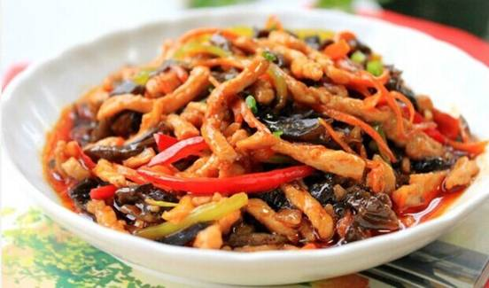
鱼香肉丝
鱼香肉丝（英文名：Fish deer）是一道汉族传统名菜，以鱼香调味而得名。相传灵感来自老菜泡椒肉丝，民国年间由四川籍厨师创制而成。
主料为猪肉、黑木耳，辅料因做法而各异，但多为胡萝卜、竹笋、辣椒等。猪肉选用三成肥、七成瘦的切丝滑炒，吃起来肉丝质地鲜嫩。
成菜色红润、肉嫩、质鲜、富鱼香味。其鱼香味并不来自鱼，而是由泡红辣椒、葱、姜、蒜、糖、盐、酱油等调味品调制而成。
预定
点餐
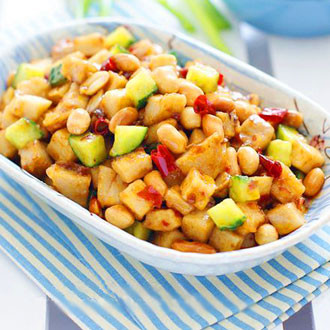
宫保杏鲍菇
杏鲍菇营养丰富，富含蛋白质、碳水化合物、维生素及钙、镁、铜、锌等矿物质，可以提高人体免疫功能，对人体具有抗癌、降血脂、润肠胃以及美容等作用。杏鲍菇具有降血脂、降胆固醇、促进胃肠消化、增强机体免疫能力、防止心血管病等功效。
预定
点餐
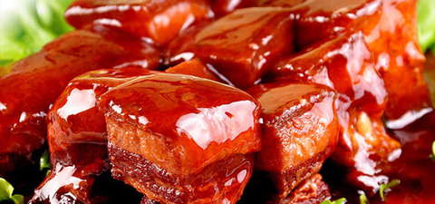
红烧肉
红烧肉是热菜菜谱之一。以五花肉为制作主料，最好选用肥瘦相间的三层肉（五花肉）来做。红烧肉的烹饪技巧以砂锅为主，肥瘦相间，香甜松软，入口即化。红烧肉在我国各地流传甚广，是一道著名的大众菜肴。
预定
点餐
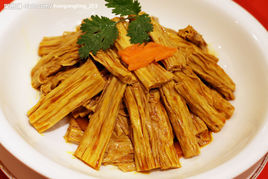
烧腐竹
烧腐竹是一道美味可口的汉族名菜，属于粤菜系素食菜谱之一。此菜色泽淡雅，味爽筋道，咸鲜微甜，营养可口。
预定
点餐
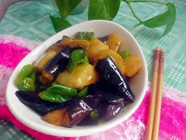
地三鲜
"地三鲜"是很有特色的一道东北汉族传统家常菜，选用了三种地里时令新鲜的食材：茄子、土豆和青椒来搭配，不仅在于鲜浓的味道、天然绿色的食材，更胜于它涵盖多种食材的营养，让三味非常普通的蔬菜做成鲜爽无比的佳肴。
预定
点餐
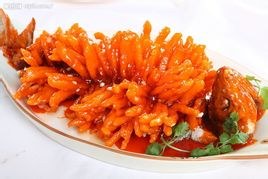
糖醋鱼
糖醋鱼，是菜谱里的常见菜，糖醋鱼口味属于糖醋味，做法属烧菜类，鲜嫩无比、酸甜可口 ，外焦里嫩，色泽金黄, 甜咸适口。
预定
点餐
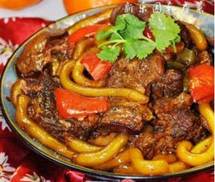
黄焖羊肉
黄焖羊肉是西北经典的名菜之一。此菜口味香酥， 肥而不腻。是清朝末代皇帝——爱新觉罗·溥仪的御膳菜肴。羊肉富有营养，具有暖中补气、滋养、御风寒、生肌健力等功效
预定
点餐
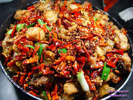
辣子鸡
辣子鸡是一道经典的川渝地区的汉族传统名肴，因缘于重庆歌乐山而得名。此菜成菜色泽棕红油亮，麻辣味浓。咸鲜醇香，略带回甜。一般以鸡为主料，加上葱、干辣椒、花椒、盐、胡椒、味精等多种材料精制而成，营养丰富，味道鲜美，虽然是同一道菜，各地制作也各有特色。
预定
点餐
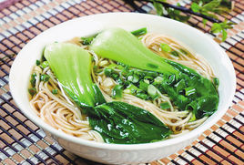
阳春面
阳春面是苏式汤面的一种，又称光面、清汤面或清汤光面，汤清味鲜，清淡爽口。是江南地区著名的汉族面食小吃，作为淮安的一大特色。民间习惯称阴历十月为小阳春，上海市井隐语以十为阳春。以前此面每碗售钱十文，故称阳春面。
预定
点餐
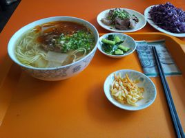
兰州牛肉面
兰州牛肉面，又称兰州清汤牛肉面，是“中国十大面条”之一，是甘肃省兰州地区的清真风味小吃。它以“汤镜者清，肉烂者香，面细者精”的独特风味和“一清二白三红四绿五黄”，一清（汤清）、二白（萝卜白）、三红（辣椒油红）、四绿（香菜、蒜苗绿）、五黄（面条黄亮），赢得了国内乃至全世界顾客的好评。并被中国烹饪协会评为三大中式快餐之一，得到美誉“中华第一面”。
预定
点餐
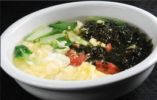
紫菜蛋花汤
紫菜蛋花汤属于一款速食汤，是四川传统餐后汤，其主料紫菜和鸡蛋的营养价值都比较高，因其制作简单方便，营养丰富而广受喜爱紫菜属中叶状藻体可食的种群，其蛋白质、铁、磷、钙、核黄素、胡萝卜素[1] 等含量居各种蔬菜的之冠，故紫菜又有“营养宝库”的美称。。
预定
点餐
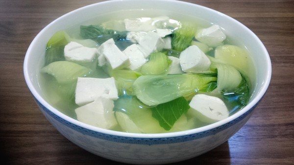
青菜豆腐
青菜豆腐是一道色香味俱全的汉族名肴，江南地区尤为流行。 此菜汤白绿相间，色泽鲜艳，豆腐软嫩，汤味鲜美，清爽宜人，非常适合夏季食用。青菜豆腐汤的做法也比较简单。鸡毛菜少许，嫩豆腐一盒。将豆腐取出，切小丁。入锅，倒入高汤。加入盐、糖（少许）、胡椒粉；倒入豆腐丁，开锅后加入稍浓的生粉水；鸡毛菜切豆腐粒大小，放入锅中片刻，起锅。点少许麻油即可出锅。
预定
Demo